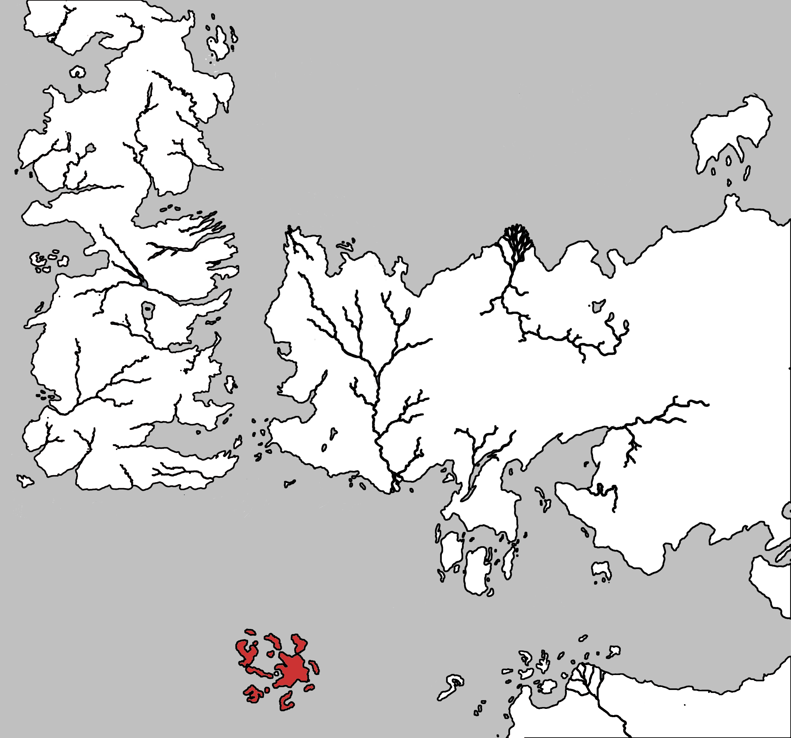

Jhala
Jhala is the southernmost of the three largest of the Summer Islands.The Red Flower Vale is a river valley in eastern Jhala and the Sweet Lotus Vale s a river valley in western Jhala. Ebonhead is a town on its southern coast at the mouth of the Sweet Lotus Vale. to its north is the Indigo Straits and the island of Omboru. To the south is Parrot Bay and the three islands called The Bones, and the islands Doquu and Xon. The Golden Head is a peninsular in southeast Jhala. To the north of Golden Head is a group of small Islands called Lizard Head. To the west is the island Moluu.
Map on Next page.
